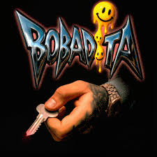

BOBADITA

Tema reciente que consolida su alianza con Geezydee, otro colaborador del EP.
Escuchar/Ver VideoConoce a Kris R, una de las voces más reconocidas del movimiento trap en Colombia y socio constante de Blessd.

Kris R es ampliamente considerado uno de los pioneros que ayudó a establecer la base del trap en Medellín. Su estilo es crudo, directo y profundamente arraigado a las narrativas de calle. Ha forjado una sólida carrera con Blessd, siendo co-creador de varios éxitos.
Canciones como "JOKER" y colaboraciones con artistas de alto calibre demuestran su influencia dentro y fuera de Colombia.
Tema reciente que consolida su alianza con Geezydee, otro colaborador del EP.
Escuchar/Ver VideoSencillo destacado en su discografía, mostrando su estilo característico.
Escuchar/Ver Video
Canción popular en la escena underground que resalta su lírica.
Escuchar/Ver VideoUn tema con gran acogida entre sus seguidores.
Escuchar/Ver Video